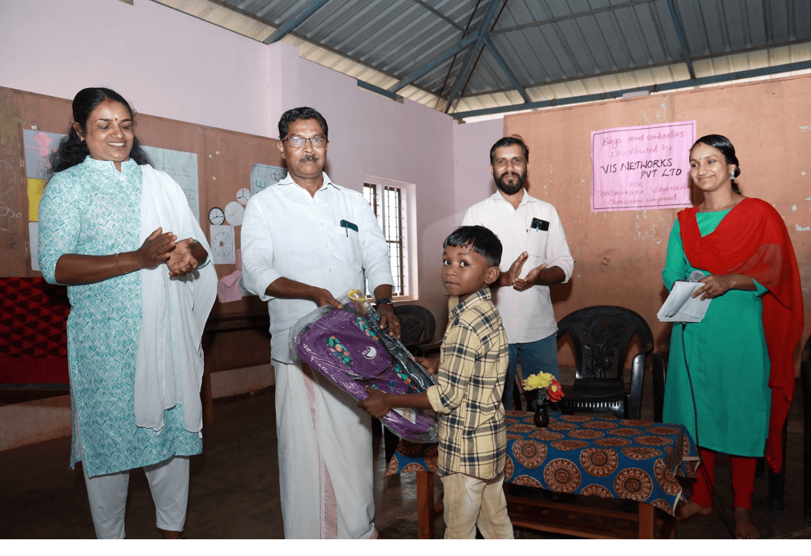
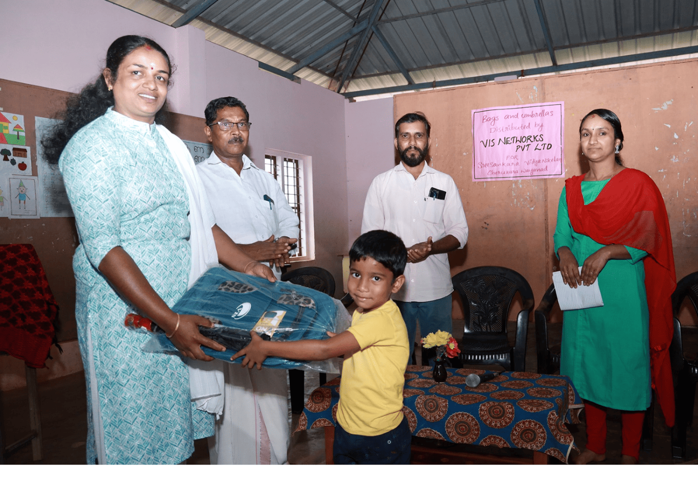
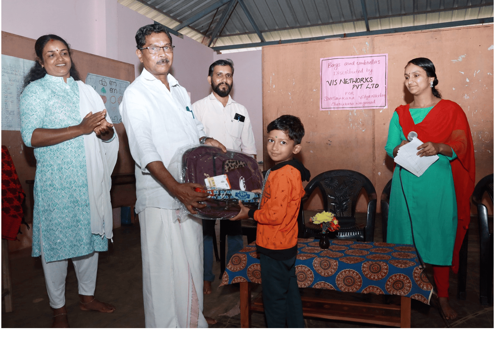
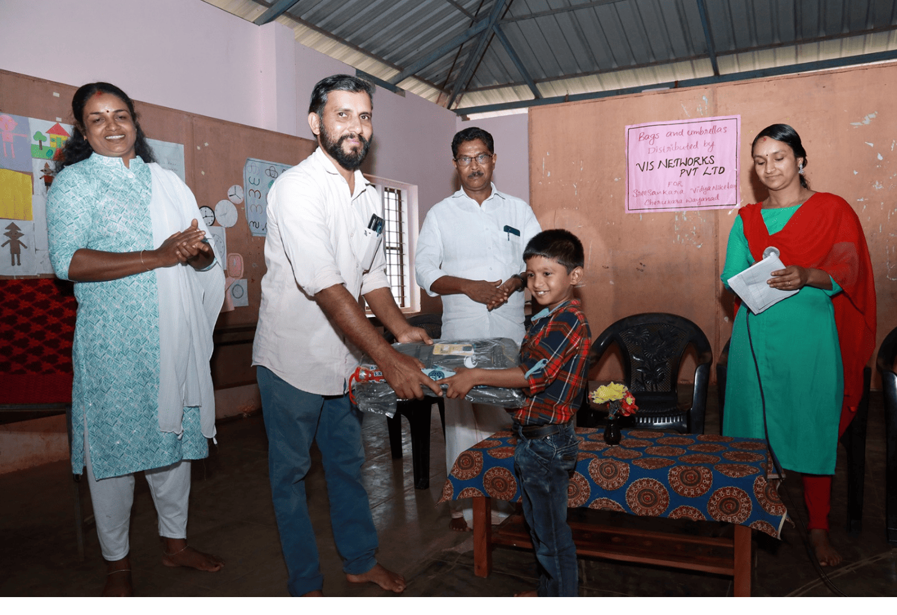

We are deeply honored to have had the opportunity to support Sreesankara Vidya Nikethan U P School in Cherukara, Wayanad this academic year.
Knowing that our donation of 204 umbrellas and 59 school bags reached the hands of 200 deserving students — primarily from tribal and financially disadvantaged families — fills us with immense gratitude and humility. This initiative, facilitated through the dedicated efforts of the Vivekananda Medical Mission, underscores our commitment to empowering education and supporting underprivileged communities.
We extend our heartfelt thanks to the school's teachers and administration for their unwavering dedication, and we look forward to continuing our partnership in fostering a brighter future for these children.
Gallery



